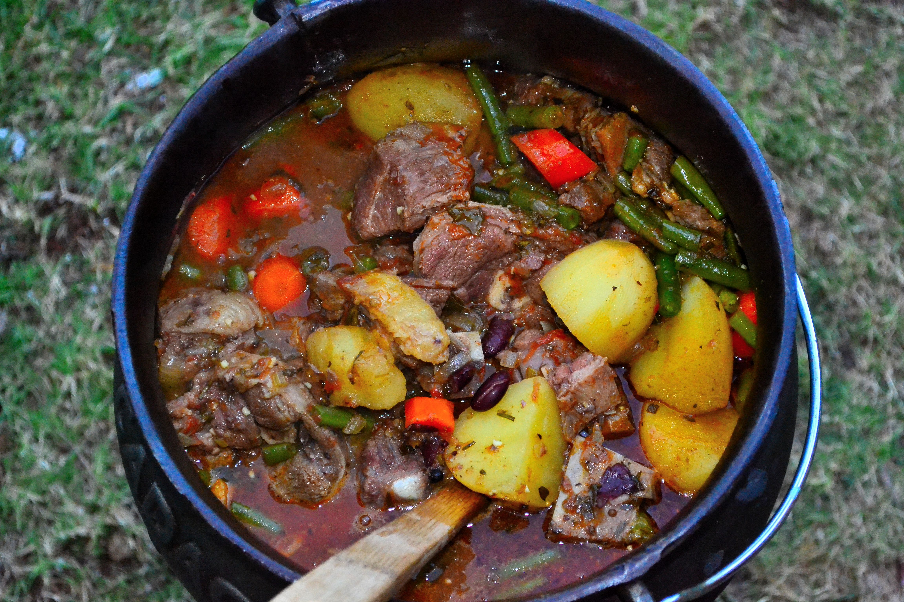

South Africa also has a highly developed fast-food culture, with several locally founded chains achieving national and international prominence. The most notable is Nando's, founded in Johannesburg in 1987, which specialises in flame-grilled peri-peri chicken and operates more than 1,250 outlets in over 23 countries.[231] Other major South African fast-food franchises include Wimpy, Steers, Debonairs Pizza and Chicken Licken, many of which have expanded throughout Africa and other regions. International fast-food brands are also well established in South Africa; the country is among the world's leading markets for KFC outlets, reflecting the widespread popularity of fast food across income groups and urban centres.
In the beverage sector, South Africa has played an influential role in both global energy drinks and wine. Monster Energy, although marketed as an American brand, was founded by South African-born entrepreneurs Rodney Sacks and Hilton Schlosberg, who relocated to the United States and played a central role in the company's international expansion.[385] South African wine is also renowned internationally, with vineyards in regions such as Stellenbosch, Franschhoek, Paarl and Barrydale. These wine-producing areas form a significant part of the country's culinary tourism industry, contributing to South Africa's international reputation for food and drink.
 By DimiTalen - Own work, CC BY-SA 3.0, Link
By DimiTalen - Own work, CC BY-SA 3.0, Link

By Chrstphr.jones - Own work, CC BY-SA 4.0, https://commons.wikimedia.org/w/index.php?curid=37013920 By © soultea.de (http://www.soultea.de/), Photographer André Helbig
(http://andrehelbig.de/), CC BY-SA 3.0, https://commons.wikimedia.org/w/index.php?curid=22907987
By © soultea.de (http://www.soultea.de/), Photographer André Helbig
(http://andrehelbig.de/), CC BY-SA 3.0, https://commons.wikimedia.org/w/index.php?curid=22907987